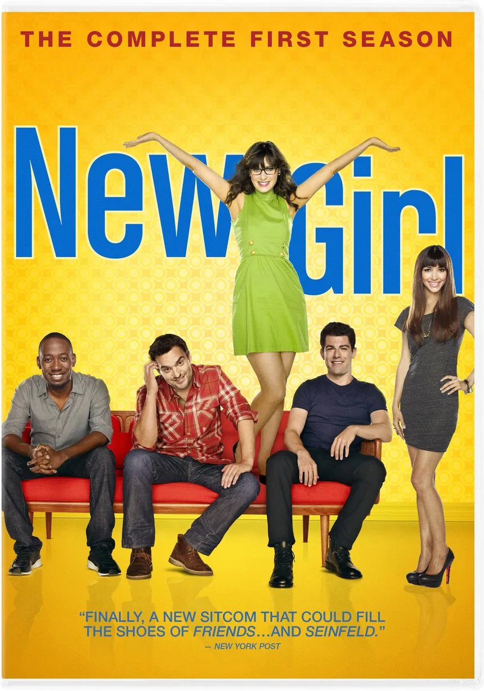

New Girl
| Informações geral | |
|---|---|
| Formato - | siticom |
| Gênero - | Comédia |
| Duração - | 22 minutos |
| Estado - | Concluída |
New Girl é uma série de televisão americana que estreou nos Estados Unidos em 20 de setembro de 2011 [2] na Fox.
Em 28 de setembro de 2011, após apenas dois episódios terem ido ao ar, a Fox encomendou mais onze episódios, fora os treze que foram inicialmente encomendados, totalizando 24 episódios, fazendo da série a primeira da Fall season 2011-2012 a ter uma temporada completa confirmada. No Brasil a série estreou na Fox Brasil no dia 4 de abril. Em Portugal a serie é exibida pelo Fox Comedy desde 9 de maio de 2016 e também exibida na TVI. Em Portugal a série também está disponível até a 4ª temporada na Netflix.
Em 9 de abril de 2012, foi anunciada a renovação de New Girl para uma nova temporada[4], que estreou em 25 de setembro de 2012[5] Em 14 de maio de 2017, a Fox renovou a série para uma sétima e última temporada consistindo de oito episódios, que estreou em 10 de abril de 2018 [6][7] O final da série foi ao ar em 15 de maio de 2018.
A série é estrelada por Zooey Deschanel como Jessica "Jess" Day, uma garota esquisita e adorável que descobre que o namorado a traiu e por isso precisa arrumar um novo lugar para morar. Ela acaba arrumando um lugar onde moram três homens: Nick, um barman; Schmidt, um conquistador profissional, e Winston, um ex-jogador de basquetebol. Completam este grupo improvável a esperta amiga modelo de Jess, Cece. Juntos, os amigos tentam ajudar Jess a aprender sobre o amor, a vida e principalmente sobre si mesmo, enquanto ao mesmo tempo, eles aprendem mais sobre si mesmos.
| Informações geral | |
|---|---|
| Formato - | siticom |
| Gênero - | Comédia |
| Duração - | 22 minutos |
| Estado - | Concluída |